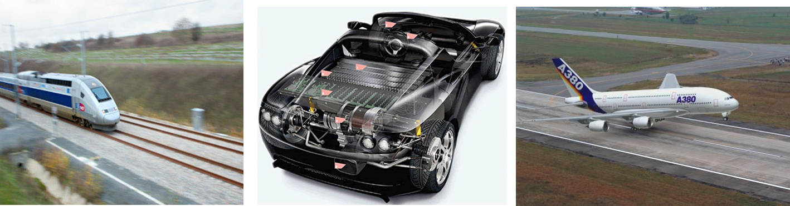
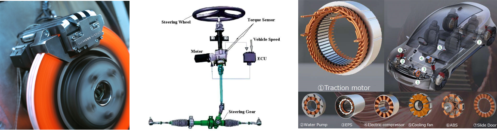

1.6. Systems, complex technological systems and space systems#
Notion de système : évolution historique, définition, technologies
Systèmes spatiaux, new space et cubesat
Description d’architecture, interfaces
Cas d’étude : TMS de cubesat, application au contrôle thermique de batterie
Homework : analyse d’entreprise dans le domaine du new space, de besoins TMS (hardware, software, service) et definition d’interfaces. Préparation d’un pitch de positionnement d’une entrepise du newspace
1.6.1. Systems#
1.6.1.1. From mechanical systems to complex technological systems#
Many mechanical systems have evolved into complex technological systems.
Under each figure, answer the following questions:
What are their functions, performance and reliability?
What technical fields are needed to design them?
Which engineers?


The car is typical of this evolution in technological systems:
Electronic and computer technologies have been integrated into combustion-powered vehicles:
10 circuits (electrical and fluids)
12% value = IT, > 25 computers per vehicle
30% value other than mechanical
New architectures are seeing a multiplication of functions:
GPS, Mobile, Multimedia
Active safety (ABS, ESP, lane tracking, ADAS)
Power electronics, electric motors and electrochemical technologies are playing an increasingly important role in:
Driving assistance: electric steering, variable assistance and gear ratios
Propulsion systems: hybrid and electric
Energy storage: the price of the battery can represent 40 to 50% of the total price of the vehicle.

1.6.1.2. System definition#
The System Engineering Handbook of NASA define a system [Nasa, 2017] as:
A “system” is the combination of elements that function together to produce the capability required to meet a need. The elements include all hardware, software, equipment, facilities, personnel, processes, and procedures needed for this purpose; that is, all things required to produce system-level results. […] The value added by the system as a whole, beyond that contributed independently by the parts, is primarily created by the relationship among the parts; that is, how they are interconnected.
The aim of this teaching module is to introduce you to the approaches needed to design a system, particularly with regard to the following aspects:
-meet a need: functional analysis, preliminary design
-hardware, software: electronic technology, programming
-how they are interconnected: architecture, system simulation
through a space subsystem.
1.6.1.3. Space systems in new Space#
NewSpace refers to the emergence of a private-initiative space industry at the beginning of the 21st century, stimulated by certain governments to strengthen international competitiveness while guaranteeing strategic independence in key sectors.
Note: Connect by CNES is a CNES field programme launched in 2016 to support the development of new space in France.

NewSpace concern in particular a group of relatively new aerospace companies working to develop low-cost, public access to space exploration and space applications:
new naunchers: https://www.latitude.eu
space logistics: Logistique dans l’espace (exotrail)
Capsule (the exploration company)
Nanosatellites constellations: https://www.hemeria-group.com/wp-content/uploads/2022/05/NANOSAT_FR_2022.pdf
Constellations https://www.kineis.com/iot-technologie/
Aval https://www.naio-technologies.com/ Autonome avec guidage et paramétrage des tâches par GNSS RTK. Système Naïo Core inclus
1.6.1.4. Cubesat platform#
système cubesat : système breakdown
Reseau de fournisseurs https://www.cubesatshop.com/
Exemple de technologies :
poussée ionique https://www.exotrail.com/ https://comat.space/p/small-sat/fr-pjp-technology/
Processus de conception
Ingeniérie des exigences . Analyse du besoin .
1.6.1.5. References#
[Nasa, 2017] Hirshorn, S. R., Voss, L. D., & Bromley, L. K. (2017). Nasa systems engineering handbook (No. HQ-E-DAA-TN38707). Link
https://www.nasa.gov/wp-content/uploads/2017/03/nasa_csli_cubesat_101_508.pdf